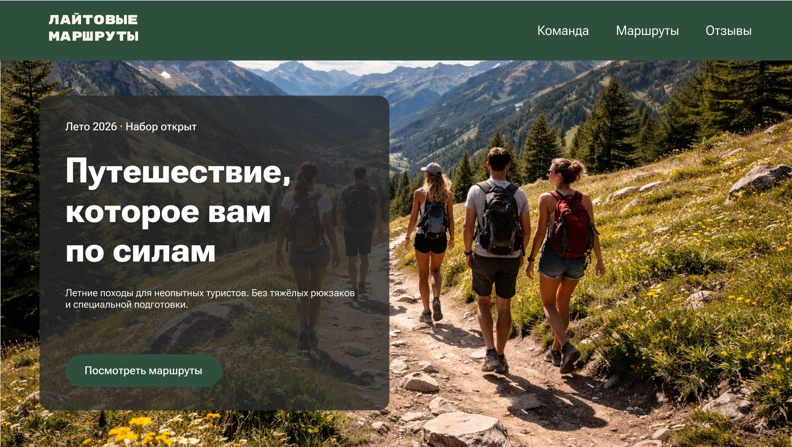
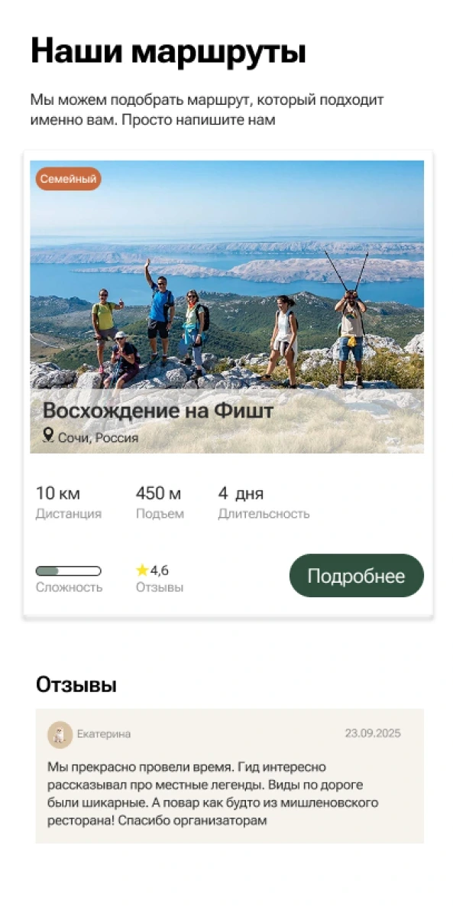
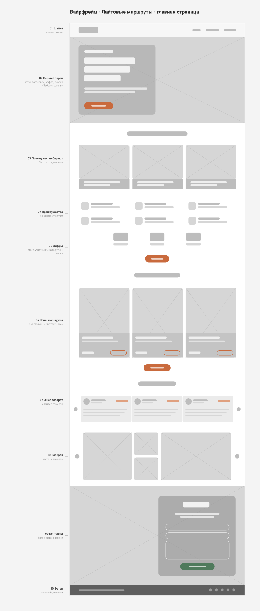
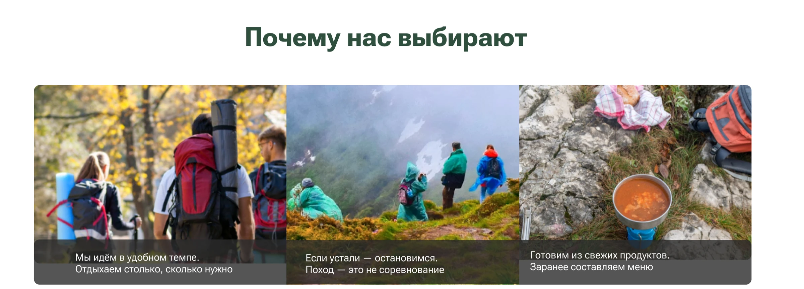
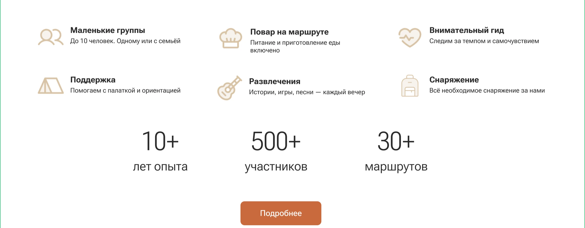
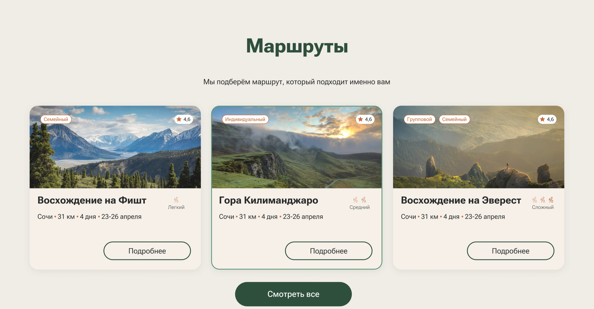
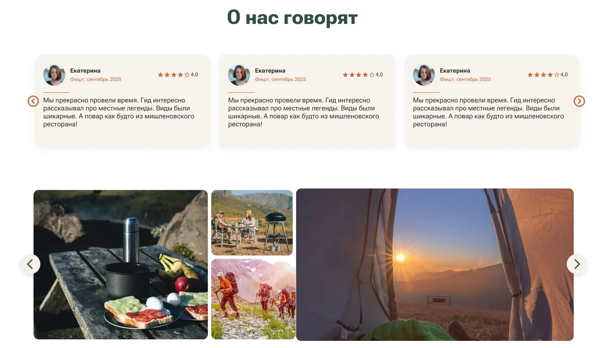
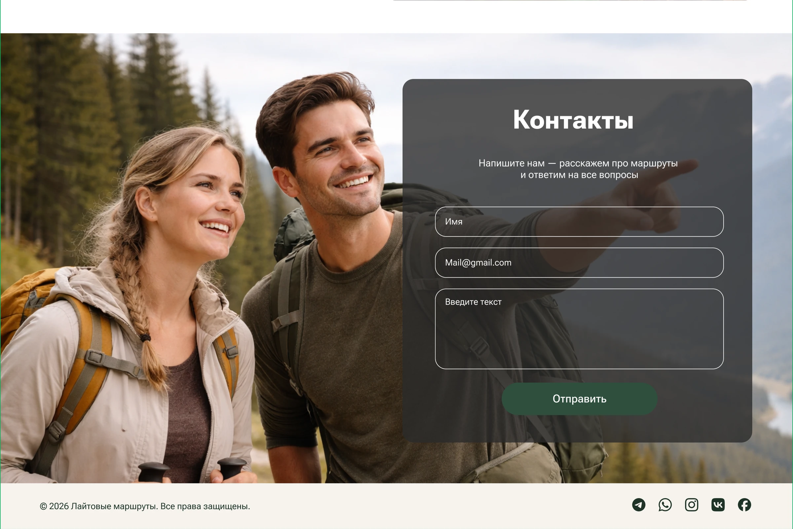
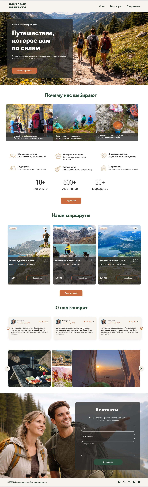

Лайтовые
маршруты
Сайт для компании, которая водит в горы тех, кто никогда не ходил в походы.

01 — О проекте
Поход — это не только для выносливых
Задача
Спроектировать с нуля главную страницу сайта компании, которая организует лёгкие походы в горы: понятную, тёплую и убедительную для новичков.
Аудитория
Люди без туристического опыта, семьи с детьми и все, кто давно мечтает о горах, но сомневается, что справится.
Идея
Сайт ведёт диалог с посетителем и по очереди снимает его страхи. Лёгкость и открытость передают простая графика, тёплые цвета, реальные фотографии, много воздуха, скруглённые формы и тонкие линии.
Проблема
«Я бы пошёл в горы, но вдруг не дойду?»
Туристические сайты обычно говорят с опытными: километры, перепады высот, списки снаряжения. Новичка это пугает ещё до выбора маршрута — и он остаётся дома.
02 — Процесс
От страхов — к структуре
Конкуренты, отзывы туристов, страхи новичков
Композиция блоков, карточки маршрутов, стиль фото
Порядок блоков по пути пользователя
Шрифт, контраст, цвета, графика
Главная страница целиком
03 — Исследование
Что останавливает новичка
«Я не дойду, буду отставать от группы»
→ Идём в удобном темпе. Если устали — остановимся.
«У меня нет палатки и рюкзака»
→ Всё необходимое снаряжение за нами.
«А чем там кормят?»
→ Повар на маршруте, меню составляем заранее.
2
сегмента аудитории
Городской новичок 25–40 лет, который устал от пляжа, и семья с детьми, которой важна безопасность.
→
Вывод
Сайт должен продавать не маршрут, а ощущение безопасности и комфорта.
04 — Дизайн-концепция
Референсы и каркас
До визуала собрала референс карточки маршрута и выстроила вайрфрейм главной страницы: 10 блоков в порядке пути пользователя.

Карточка маршрута
Фото, километры, подъём, дни, сложность и одна кнопка. Отзыв рядом с маршрутом — социальное доказательство там, где принимают решение.

Вайрфрейм — первая версия структуры
Шапка → первый экран → почему нас выбирают → преимущества → цифры → маршруты → отзывы → галерея → контакты → футер. Нажмите «+», чтобы открыть схему целиком.
05 — Решения
Каждый блок отвечает на один страх
«Путешествие, которое вам по силам»
Заголовок сразу снимает главное возражение, подзаголовок уточняет: без тяжёлых рюкзаков и специальной подготовки.
- Обычные люди на лёгкой тропе, а не альпинисты на вершине
- «Лето 2026 · Набор открыт» — мягкая срочность
- Одна акцентная кнопка — «Забронировать»
Страхи — в подписях к фото
Три живые фотографии с короткими ответами на главные страхи новичка: «Мы идём в удобном темпе», «Если устали — остановимся. Поход — это не соревнование», «Готовим из свежих продуктов».

Конкретика и цифры
Шесть иконок отвечают на практические вопросы: маленькие группы, повар, внимательный гид, помощь с палаткой, вечерние развлечения, снаряжение. Цифры 10+ лет, 500+ участников и 30+ маршрутов работают на доверие.

Маршрут понятен за 3 секунды
В карточке всё, что нужно для решения: название, место, километры, дни, даты, сложность, рейтинг и цена.
- Метка «Семейный» для второго сегмента аудитории
- Сложность иконками: лёгкий или сложный — понятно без чтения
- Цена и кнопка «Подробнее» внизу карточки

Отзывы и живая галерея
Отзывы с фото, названием маршрута и датой. Галерея показывает «изнанку» похода: завтрак на природе, лагерь, рассвет из палатки — то, ради чего едут.

Короткая форма для тех, кто сомневается
Не все готовы бронировать сразу. Для них — форма из трёх полей: «Напишите нам — расскажем про маршруты и ответим на все вопросы».

06 — Визуальный язык
Тёплая палитра горного похода
Утренний туман
#F6F3EE
Фон
Песок тропы
#D8C3A5
Акцент фона, иконки
Костёр
#C96A3D
Главные кнопки
Хвойный лес
#1E3227
Заголовки
Скала
#2A2A2A
Основной текст
Aa
Roboto Flex
Основной шрифт. Гибкий гротеск с мягкими формами: дружелюбный в заголовках и хорошо читается в мелком тексте. Логотип набран расширенным начертанием.
07 — Итог
Сайт, который ведёт от сомнения к брони
Макет целиком
Нажмите «+», чтобы открыть макет целиком

Если вам близок такой подход и нужен сайт, который говорит с пользователем на его языке, — давайте обсудим ваш проект.